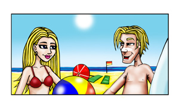

Attività 12 Un incontro al mare
Immagina ...

È domenica mattina e sei alla spiaggia. Che paradiso!
You have just come out of the water and are sitting on the sand, soaking up the sunshine and totally absorbed by the beauty around you.
La vita è bella! All of a sudden your thoughts are interrupted …
'Ciao, posso sedermi qui?'
Che strano!
You do not expect to be spoken to in Italian on a beach in Australia! What is more amazing is that after a very short time learning Italian, you can actually understand something!
You say: Ah … scusa … si certo
… … continue the conversazione.
 |
This activity will require you to use information that you have acquired so far. In preparing for this activity, you will need to go to the various sections to find the information required. |
To prepare for this conversation, think about:
- which questions you need to ask to find out as much as possible about the Italian teenager
- what kind of questions the teenager would ask you to find out about you.
Use worksheet_A3.12 to prepare a list of possible questions and answers that are relevant for Un incontro al mare.
Practise and rehearse the type of language that you may need to use. Thorough preparation will make you feel more confident with the language.
 |
Refer to Una guida: Un incontro al mare to help you with possible expressions. |
Che esperienza favolosa!
Hopefully this activity has inspired you and made you feel confident about learning italiano. It is wonderful that you have managed to have a conversation in Italian.
You need to find opportunities to practise the language as much as possible.
Why not find out about the possibility of being involved in an exchange program?
The following are two well-established groups in Western Australia that have exchange programs with Italy. They are:
- WAATI (WA Association of Teachers of Italian) Intercultural Exchange Program – ask your teacher for contact details
- Nacel Australia at www.nacel.com.au.
|